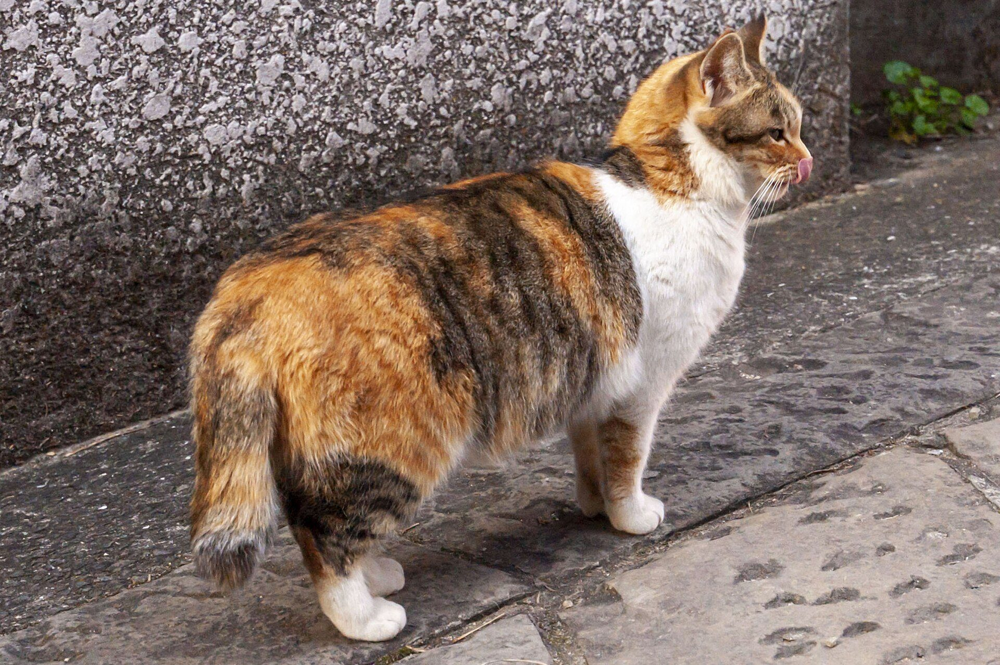
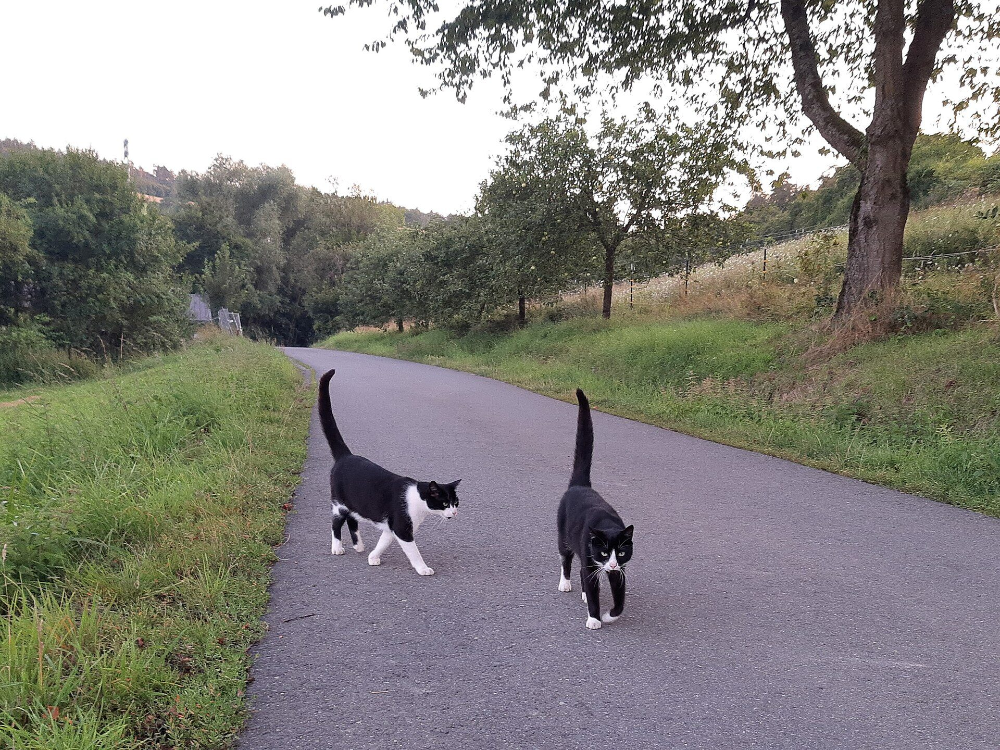
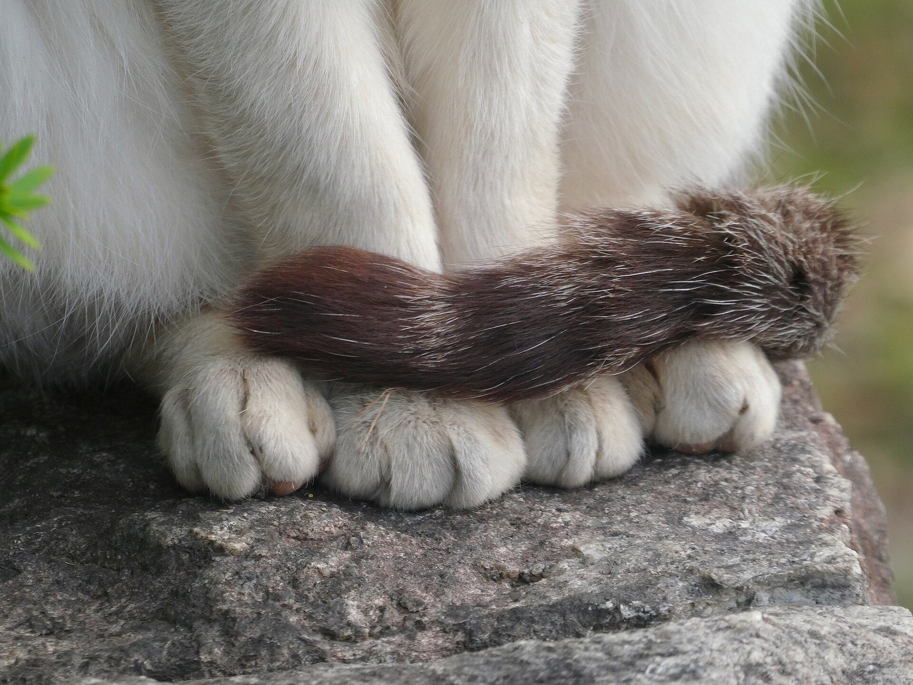
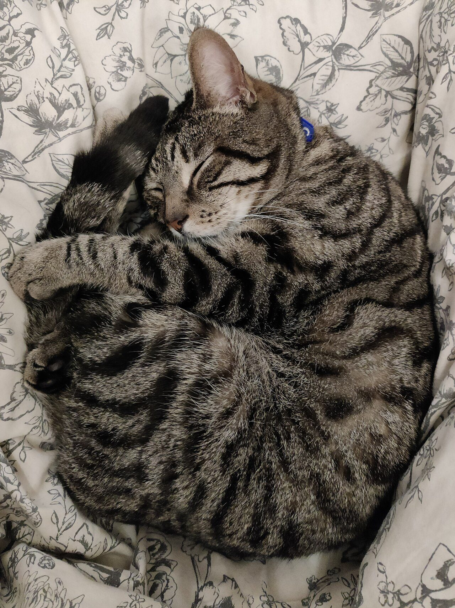

ブログ
猫のしっぽの気持ち完全ガイド：立てる・振る・ふくらむ、9つのサイン
公開 2026-10-26・日本ねこ編集部
結論から言うと、猫のしっぽは「高さ」と「動く速さ」で気持ちが読めます。高く立てていればごきげん、ゆっくり揺れていればリラックス。大きく速く振っていればイライラ、ふくらんでいれば怖がっているサインです。犬のように「振っている＝うれしい」ではない点に、いちばん注意してください。

写真：Marine-Blue（CC0 1.0）
帰宅すると、しっぽをピンと立てて小走りで迎えにきてくれる。名前を呼ぶと、寝たままでしっぽの先だけがぱたんと返事をする。猫と暮らしていると、しっぽがまるで言葉のように見えてくる瞬間があります。
猫のしっぽの動きは、研究者のあいだでも「コミュニケーションの信号」として調べられてきました。この記事では、よく見る9つのしっぽのサインと読み方のコツをまとめました。
しっぽの気持ち 早見表
| しっぽの様子 | 気持ち | 接し方 |
|---|
| ピンと垂直に立てる | うれしい、あいさつ、仲よくしたい | やさしく声をかけてなでる |
| 立てて先だけ曲げる | ごきげん、ちょっと甘えたい | 遊びやスキンシップに応える |
| ゆっくり大きく揺らす | リラックス、のんびり考えごと | そのまま見守る |
| 先だけ小さく動かす | 返事、少し気になる | 呼びかけを続けすぎない |
| 大きく速く振る | イライラ、もうやめて | 手を止めて距離をとる |
| 床にパタパタたたく | 不満、がまんの限界が近い | 構うのをやめる |
| 太くふくらむ | びっくり、怖い、身を守りたい | 原因から離して静かに待つ |
| 足のあいだに巻きこむ | 不安、自信がない | 隠れられる場所を用意する |
| 体に巻きつける | 安心、ちょっと寒い | 室温や寝床をチェック |
しっぽだけで決めつけず、耳の向きや姿勢、鳴き声とあわせて見るのがコツです。同じ「揺らす」でも、耳が横に寝ていればイライラ、前を向いていれば好奇心というように意味が変わります。
しっぽをピンと立てる：「会えてうれしい」のあいさつ
しっぽを垂直に立てて、軽い足どりで近づいてくる。これは猫のしっぽのなかでも、いちばんうれしいサインです。All Aboutの猫ガイド記事では、しっぽを立ててスリスリしてくるのは、安心して気分が安定しているときの表れと紹介されています。

写真：Gerda Arendt（CC0 1.0）
このしぐさは研究でも確かめられています。イタリアの研究者カファッツォとナトリの2009年の論文によると、外で暮らす猫の群れでは、しっぽを立てた猫は友好的な気持ちで相手に近づき、体をこすりつけ合うことが多いと報告されています。英国サウサンプトン大学のキャメロン＝ボーモントの研究では、「しっぽを立てた猫」と「下げた猫」のシルエットを見せると、立てたほうへ早くためらわずに近づいたそうです。
同じ研究では、ヤマネコなど野生のネコ科動物は、仲よしの相手にもしっぽを立てるあいさつをほとんどしないことも示されています。つまり「しっぽピン」は、猫が人と暮らすなかで育ててきた特別なあいさつなのかもしれません。うちの子がしっぽを立てて迎えにきてくれたら、それは家族へのあいさつです。
ゆらゆら・ぶんぶん：振り方で気持ちは正反対
犬と暮らした経験がある人ほど、ここで勘違いしやすいかもしれません。猫がしっぽを振るのは、必ずしも喜んでいるからではないのです。
ゆっくり大きく揺れる
窓の外を眺めながら、しっぽがゆーらゆーらと大きく揺れているときは、リラックスしているか、何かをのんびり観察しているときです。
先だけ小さく動く
All Aboutの記事では、猫は返事のかわりにしっぽの先だけを振ることがあると紹介されています。名前を呼ぶと寝たままでしっぽだけがぱたぱた動くのは、「聞こえているよ。でも起きるほどじゃないよ」という、なんとも猫らしい返事です。寝ているのにしっぽだけ動く理由も、あわせてどうぞ。
大きく速く振る
ブンブンと大きく速く振っているのは、機嫌が悪いサインです。ウォーカープラスの記事でも、専門家が「大きく振っていたら、むしろ機嫌が悪い」と解説しています。抱っこやなでている最中にしっぽが激しく動きはじめたら「もう十分」の合図。そのまま続けるとガブッとかまれることもあります。
床にパタパタたたきつける
文春オンラインの記事では、しっぽを床に打ちつけるのは不満を発散させている状態と紹介されています。遊びを途中でやめられたときや、ごはんを待たされているときによく見られます。
ふくらむ・巻きこむ：怖い、不安のサイン
しっぽがブラシのように太くふくらむのは、びっくりしたときや怖いときです。全身の毛を逆立てて、自分を大きく見せようとしています。インターホンや掃除機の音のあとによく見られます。無理に抱き上げず、原因から離れられるようにして、落ち着くまで静かに待ってあげてください。
しっぽを後ろ足のあいだに巻きこんで体を低くしているときは、不安や自信のなさの表れです。来客や動物病院など、慣れない場面でよく見られます。隠れられる箱やキャリーを用意しておくと安心します。
体に巻きつける：落ち着いている、少し寒いかも
座ったときにしっぽを前足にくるりと巻きつけているのは、落ち着いてくつろいでいるサイン。丸くなって眠るときにしっぽで鼻先まで包んでいるなら、体温を逃がさないようにしているのかもしれません。冬にこの姿が増えたら、猫の寒さ対策ガイドを参考に寝床や室温を見直してみてください。

写真：KKPCW（CC BY-SA 4.0）

写真：Biblio-pencil（CC BY-SA 4.0）
日本の猫は、しっぽが短い？
日本で暮らしていると、しっぽが短い猫や先がかぎ型に曲がった猫によく出会います。海外では、日本の短いしっぽの猫が「ジャパニーズボブテイル」として知られているほどです。
長いしっぽの猫は年をとると「猫又」という妖怪になる、という言い伝えが江戸時代にあり、しっぽの短い猫が好まれたという説もあります。しっぽが短くても気持ちの伝え方は同じ。短いしっぽをぴこぴこ立てて近づいてくる姿も、格別のかわいさです。
しっぽの扱いで気をつけたいこと
しっぽは背骨の続きで、たくさんの骨と神経が通っています。つかんだり引っぱったりするのは絶対にやめましょう。小さな子どもがいる家庭では、「しっぽは触らない」を家族のルールにしておくと安心です。ドアの開け閉めでしっぽをはさまないことも大切です。
なでるなら、背中からしっぽの付け根のあたりまでが基本です。どこをなでると喜ぶかは猫がよろこぶ、なでポイント3つにまとめています。
こんなときは動物病院へ
しっぽが急に下がったまま動かない。触ると痛がる。付け根を気にしてなめ続けている。毛が抜けて赤くなっている。こんな様子があれば、早めにかかりつけの動物病院に相談してください。付け根を強く引っぱられたりはさまれたりしたあとは、見た目に傷がなくても、おしっこやうんちの出かたに影響が出ることがあります。トイレの様子がいつもと違うときも、あわせて伝えましょう。
まとめ
猫のしっぽは、高く立てれば「うれしい」、ゆっくり揺れれば「のんびり」、大きく振れば「やめて」、ふくらめば「怖い」。この4つを覚えるだけで、うちの子の気持ちがぐっと読みやすくなります。イラストでさっと見返したいときは猫のしっぽの気持ち、読めていますか？もどうぞ。
今日、うちの子のしっぽはどんな形でしたか？しっぽピンのお出迎えが撮れたら、ぜひInstagramで #JapanNeko をつけて見せてください。
参考にした情報
この記事は一般的な情報をまとめたものです。しっぽの動きには個体差があります。体調やケガが気になるときは、かかりつけの動物病院に相談してください。
よくある質問
猫がしっぽをピンと立てて近づいてくるのはなぜですか？
あいさつと「仲よくしたい」という合図と考えられています。猫どうしの観察研究でも、しっぽを立てた猫は友好的に近づき、体をこすりつけることが多いと報告されています。
猫がしっぽを振るのは喜んでいるからですか？
犬とは違い、大きくブンブン振るのは不機嫌やイライラのサインであることが多いです。先だけを小さく動かすのは、返事や「ちょっと気になる」くらいの軽い反応です。
寝ているのにしっぽだけ動くのはなぜですか？
名前を呼ばれたときの、「聞こえているよ。でも起きるほどじゃないよ」という返事のことがよくあります。眠りが浅いときにも見られます。
しっぽがふくらむのはどんなときですか？
びっくりしたときや、怖い相手から身を守ろうとしているときです。毛を逆立てて体を大きく見せています。落ち着くまでそっとしておきましょう。
しっぽを触られるのを嫌がるのはなぜですか？
しっぽは背骨の続きで神経が多く、敏感な場所だからです。つかんだり引っぱったりするとケガにつながります。触るなら、背中から付け根のあたりまでにしておきましょう。